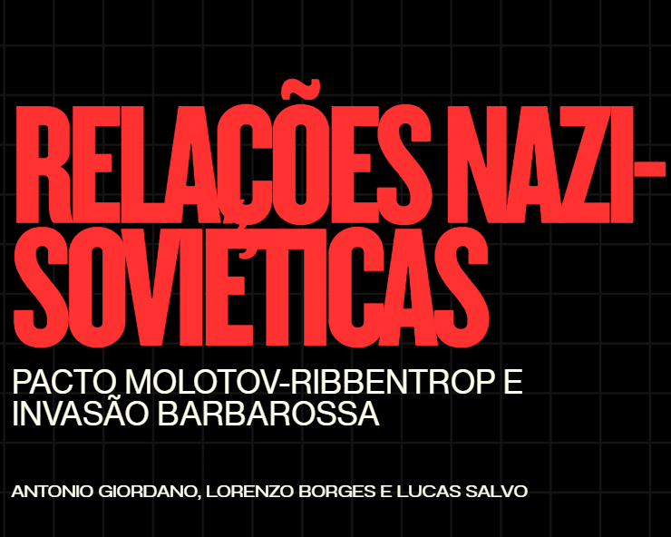
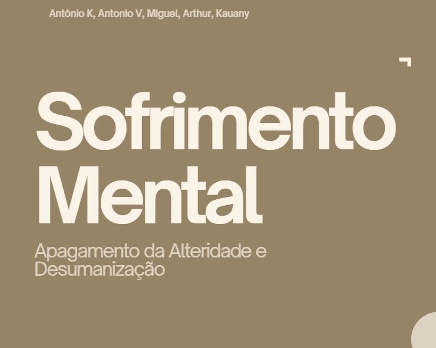
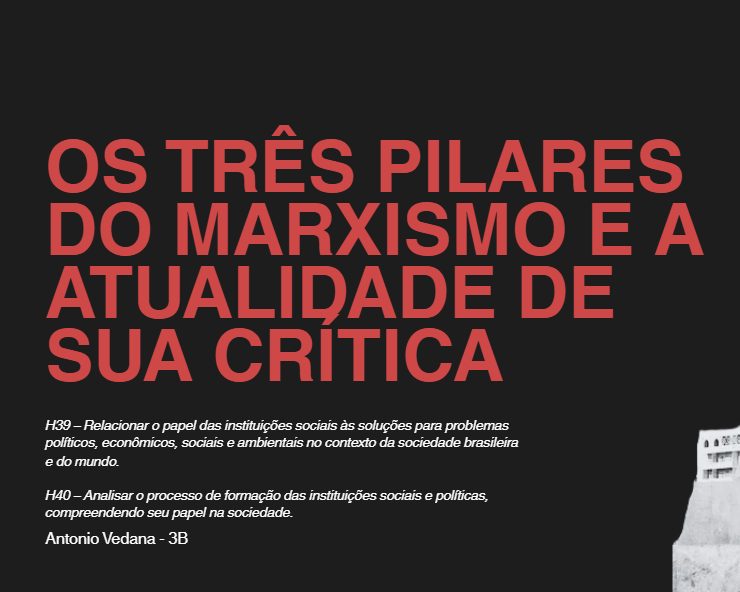

Humanas
Terceiro Ano - Ensino Médio

Análise Cartaz Soviético
Neste trabalho, selecionei um cartaz de propaganda soviético para analisar. A partir dele, desenvolvi uma pequena interpretação que explicasse sua simbologia, cores, detalhes, referências e motivações, bem como também adicionando um contexto histórico por trás do cartaz e sua tradução. Foi um trabalho divertido de fazer, pois gosto de estudar tanto sobre esse período da história, bem como sobre as artes nele produzidas. Acredito que a atividade tenha enriquecido meu domínio sobre o tema.
C4 - H21, H22, H23 | C6 - H36, H39, H40
H21 – Reconhecer manifestações de indivíduos e grupos sociais nos diferentes contextos ao longo do tempo.
H22 – Analisar, na perspectiva humana e social, as principais características e dinâmicas dos fluxos da sociedade.
H23 – Relacionar textos analíticos e interpretativos sobre diferentes processos histórico-sociais.
H36 – Propor interpretações e soluções para problemas identificados no contexto social brasileiro.
H39 – Relacionar o papel das instituições sociais às soluções para problemas políticos, econômicos, sociais e ambientais no contexto da sociedade brasileira.
H40 – Analisar o processo de formação das instituições sociais e políticas, compreendendo seu papel na sociedade.

Jornal Revolução Russa
A partir da contextualização em sala sobre o período da Primeira Guerra Mundial e da Revolução Russa, tínhamos como objetivo produzir uma capa de jornal que emulasse os jornais da época, com uma matéria principal e duas matérias secundárias, todas relacionadas ao contexto político, econômico e cultural da época (1900-1920). Meu grupo optou por recriar um jornal Pravda (jornal oficial dos Bolcheviques), com matérias autorais. Foi um trabalho muito interessante de realizar, e nos ajudou a compreender melhor o tom e formatação dos textos propagandísticos da época, bem como o contexto de tal período histórico.
C3 - H15, H16, H20 | C6 - H39
H15 – Reconhecer os movimentos sociais e sua representação da coletividade como elemento de transformação da realidade social, política, econômica e cultural.
H16 – Compreender a relação entre ciência, tecnologia e sociedade e os efeitos dessa relação no contexto social, político e econômico.
H20 – Implementar ações de proteção ou recuperação ambiental com base em princípios, leis e iniciativas de desenvolvimento sustentável.
H39 – Relacionar o papel das instituições sociais às soluções para problemas políticos, econômicos, sociais e ambientais no contexto da sociedade brasileira.

Seminário Rússia
Neste trabalho, produzimos em grupo um seminário apresentativo sobre a Rússia, tratando sobre sua história, clima, geografia, economia (dentre outros) com base numa estrutura disponibilizada pelo professor. Por conta do escopo das informações, foi uma atividade muito enriquecedora para compreendermos melhor as nuances e a profundidade do país, bem como também fortaleceu o nosso trabalho/cooperação em grupo.
C1 - H1, H2, H3, H4, H5
H1 - Reconhecer o processo de formação do indivíduo nos aspectos históricos, geográficos, sociais e filosóficos.
H2 - Compreender o processo de socialização do indivíduo, considerando os princípios do pensamento e da lógica.
H3 - Compreender as relações de poder entre os diversos grupos sociais.
H4 - Compreender mudanças e permanências ao longo do tempo na constituição da sociedade.
H5 - Analisar criticamente os aspectos políticos, econômicos e sociais relacionados à formação da sociedade no Brasil e no mundo.

Dossiê Histórico - WW2
Neste trabalho, produzimos dois dossiês históricos sobre temas específicos relacionados à Segunda Guerra Mundial, sendo eles o Pacto Molotov-Ribbentrop e a Invasão Barbarossa. Escolhemos estes dois temas por, além de serem completamente relacionados, abordarem a perspectiva soviética da guerra, frequentemente neglicenciada na narrativa dominante. Após a elaboração dos dossiês, realizamos uma apresentação sobre os temas abordados nos dossiês, incluindo fontes primárias e a conclusão do grupo. Foi um trabalho enriquecedor pela quantidade de informações e fontes utilizadas, especialmente na elaboração dos dossiês históricos. Além disso, gostei pessoalmente do trabalho por envolver temas que tenho interesse.
Habilidades não informadas.

É Isto Um Homen? Alteridade e Sanidade Mental
Após o estudo em aula sobre os conceitos de alteridade e desumanização, foram separados temas para cada grupo, que deveria realizar uma apresentação sobre um exemplo de desumanização que ocorre no presente. Nosso grupo realizou uma apresentação sobre a sanidade mental, abordando a desumanização de indivíduos com transtornos mentais, o 'Holocausto brasileiro' (Manicômio de Barbacena) e mais. Foi um trabalho muito importante para compreendermos como se dão tais processos de desumanização e o quão presente eles ainda são em nossa sociedade atual.
H10, H22, H26, H27
H10 - Compreender as transformações no mundo do trabalho, geradas por mudanças na ordem econômica.
H22 - Analisar, na perspectiva humana e social, as principais características e dinâmicas dos fluxos da sociedade.
H26 - Comparar pontos de vista e ações sobre práticas do indivíduo ou grupo social em diferentes contextos.
H27 - Analisar hipóteses e questões ambientais, sociais, econômicas, políticas e culturais, a partir de leituras e debates.

Temas Contemporâneos - A Atualidade Crítica do Marxismo
Este trabalho consistiu na elaboração de uma apresentação com um tema relacionado à sociedade contemporânea e política, a escolha dos alunos. Escolhi o tema do Marxismo e a atualidade de sua crítica por, além de ser um tema relevante para a compreensão da realidade social atual, ser também um objeto de estudo pessoal, que considero ter propriedade suficiente para realizar uma apresentação sobre. Foi muito interessante transportar os meus conhecimentos sobre o tema para uma apresentação mais concisa e objetiva, equilibrando o conteúdo teórico, a análise crítica e a reflexão sobre a sociedade contemporânea.
H30, H39, H40
H30 – Analisar as lutas sociais e conquistas obtidas no que se refere às mudanças nas legislações ou nas políticas públicas.
H39 – Relacionar o papel das instituições sociais às soluções para problemas políticos, econômicos, sociais e ambientais no contexto da sociedade brasileira e do mundo.
H40 – Analisar o processo de formação das instituições sociais e políticas, compreendendo seu papel na sociedade.